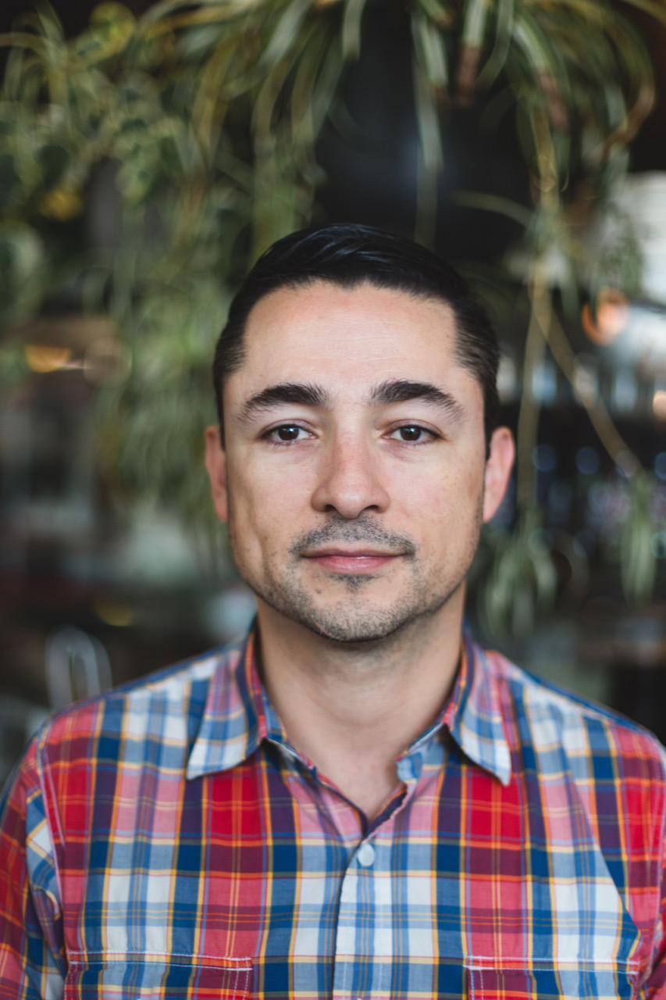

About Me

My main motivation to become a developer is to be part of the revolution! Joining an innovative team with market disruptive projects would be my dream job. I currently live in Marina de Rey, originally from Guatemala, got posted in L.A. as a trade commissioner years ago. I've seen an economy gone terribly bad, due to market side shifts, grow into a bubble about to burst, due to the afford mentioned “tech”. Time flies and innovation never stops so this is my Segway to keep up with the market trend.
Before my life in L.A. I use to work for a Vc in Seoul, Korea. At that time, I notice how the oil bubble diverted funds into a single basket. That's when I decided it was time to shift back into my previous trade policy entrepreneur career, since I had been part of the FTA negotiations team for my country, but this time as a business and investment advocate.
Outdoors activities like sailing, biking, camping, hiking, snowboarding, take most of my spare time, and help space out of the bustling work life. California both. City and outdoors jewels have made me settle and feel at home for over a decade.